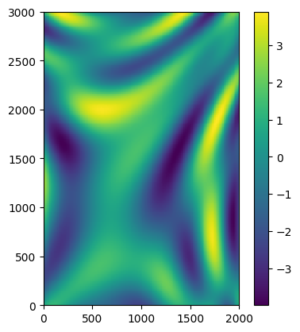
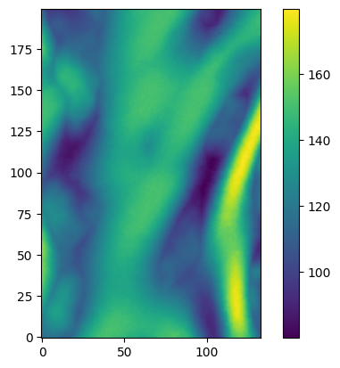
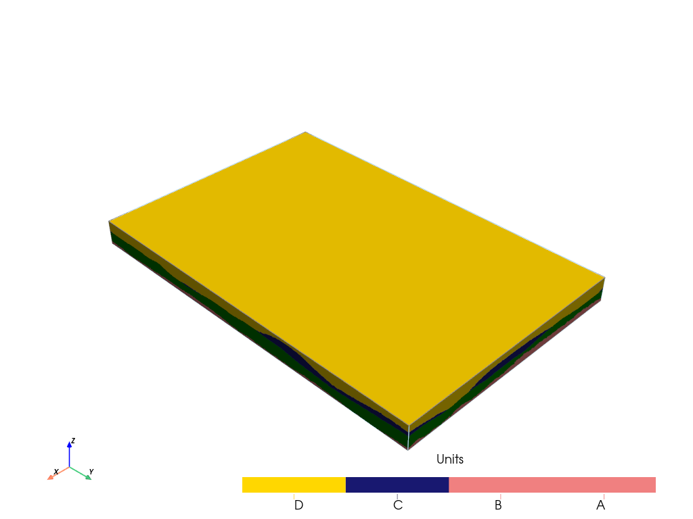
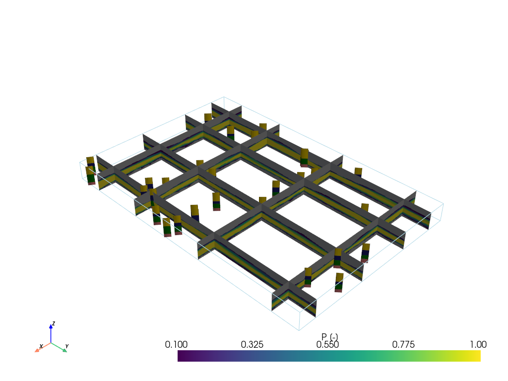
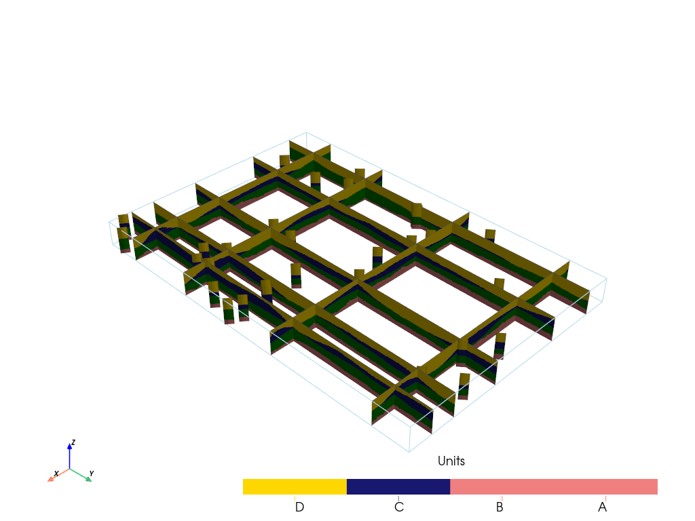

Surfaces with MPS¶
This notebooks shows how to use MPS to interpolate the surface of the units.
[1]:
import numpy as np
import matplotlib
from matplotlib import colors
import matplotlib.pyplot as plt
import geone
import geone.covModel as gcm
import geone.imgplot3d as imgplt3
import pyvista as pv
pv.set_jupyter_backend('static')
import sys
try:
import ArchPy
except:
sys.path.append("../../")
import ArchPy
print("ArchPy not installed, using local version.")
from ArchPy.base import *
[2]:
P1 = Pile(name="P1",seed=1)
[3]:
#grid
sx = 15
sy = 15
sz = 4
x1 = 2000
y1 = 3000
z1 = 201
x0 = 0
y0 = 0
z0 = 0
nx = int((x1-x0)/sx)
ny = int((y1-y0)/sy)
nz = int((z1-z0)/sz)
xg = np.linspace(x0,x1,nx+1)
yg = np.linspace(y0,y1,ny+1)
zg = np.linspace(z0,z1,nz+1)
sx = xg[1] - xg[0]
sy = yg[1] - yg[0]
sz = zg[1] - zg[0]
dimensions = (nx, ny, nz)
spacing = (sx, sy, sz)
origin = (x0, y0, z0)
define a TI for simulations¶
[4]:
def topo(x,y):
x /= 400
y /= 400
res = (np.sin(-(x-2)**2+1/7*(y-2)**2)) + \
(np.sin(-(x-1)**2+1/2*(y-1)**2))+ \
2*(np.sin(-(x-2)**2+1/2*(y-3)**2))
#res[res<0] = 0
return res
X,Y = np.meshgrid(xg[1:],yg[1:])
dd = topo(X,Y)
topoC = geone.img.Img(nx, ny, 1, sx, sy, 1, nv = 1, val=dd.reshape(1,ny,nx))
imgplt.drawImage2D(topoC)
[4]:
[<matplotlib.image.AxesImage at 0x1f13a7ee690>]

Define the units¶
C top will be simulate using the TI just above. Some parameters can be defined to control the simulation. The TI hasn’t the same range as target (C top), it is necessary to rescale the TI and this is done by setting the following parameters :
rescalingMode: method to use for the rescaling –> min_max or lengthTargetMax: max value that will be simulated (the TI max value will be set to this value)TargetMin: identical to TargetMin except it is for a minimum value
others are available such as TargetMean and TargetLength, see DeeSse documentation on continous simulations
[5]:
## Surfaces covmodel
covmodelC = gcm.CovModel2D(elem=[('cubic', {'w':100, 'r':[500,1000]})])
covmodelB = gcm.CovModel2D(elem=[('cubic', {'w':200, 'r':[600,800]})])
covmodelA = gcm.CovModel2D(elem=[('spherical', {'w':200, 'r':[600,3000]})])
#create Lithologies
D = Unit(name="D",order=1,ID = 1,color="gold",contact="onlap",surface=Surface())
dic_s_C = {"int_method" : "MPS","TI" : topoC,"TargetMin":80, "TargetMax": 180, "rescalingMode":"min_max",
"thresh":0.01,"maxscan":0.1}
C = Unit(name="C",order=2,ID = 2,color="midnightblue",contact="onlap",surface=Surface(dic_surf=dic_s_C,contact="onlap"))
dic_s_B = {"int_method" : "grf_ineq","covmodel" : covmodelB, "mean" : 100}
B = Unit(name="B",order=3,ID = 3,color="green",contact="onlap",surface=Surface(contact="erode",dic_surf=dic_s_B))
dic_s_A = {"int_method":"grf_ineq","covmodel" : covmodelA, "mean" : 30}
A = Unit(name="A",order=4,ID = 4,color="lightcoral",contact="onlap",surface=Surface(dic_surf = dic_s_A,contact="onlap"))
#Master pile
P1.add_unit([D,C,B,A])
Unit D: Surface added for interpolation
Unit C: Surface added for interpolation
Unit B: Surface added for interpolation
Unit A: Surface added for interpolation
Stratigraphic unit D added ✅
Stratigraphic unit C added ✅
Stratigraphic unit B added ✅
Stratigraphic unit A added ✅
[6]:
#We must create an ArchTable object and set a Pile master (first pile)
T1 = Arch_table(name = "P1",seed=1, working_directory = "ws_mps")
T1.set_Pile_master(P1)
T1.add_grid(dimensions, spacing, origin) #add grid
Pile sets as Pile master
## Adding Grid ##
## Grid added and is now simulation grid ##
[7]:
T1.process_bhs()
##### ORDERING UNITS #####
Pile P1: ordering units
Stratigraphic units have been sorted according to order
hierarchical relations set
No borehole found - no hd extracted
[8]:
T1.compute_surf(1)
Boreholes not processed, fully unconditional simulations will be tempted
########## PILE P1 ##########
Pile P1: ordering units
Stratigraphic units have been sorted according to order
#### COMPUTING SURFACE OF UNIT A
A: time elapsed for computing surface 0.03867816925048828 s
#### COMPUTING SURFACE OF UNIT B
B: time elapsed for computing surface 0.02952432632446289 s
#### COMPUTING SURFACE OF UNIT C
deesseRun: DeeSse running... [VERSION 3.2 / BUILD NUMBER 20230914 / OpenMP 7 thread(s)]
deesseRun: DeeSse run complete
C: time elapsed for computing surface 0.23147225379943848 s
#### COMPUTING SURFACE OF UNIT D
D: time elapsed for computing surface 0.0 s
Time elapsed for getting domains 0.014036178588867188 s
##########################
### 0.341977596282959: Total time elapsed for computing surfaces ###
[9]:
pv.set_jupyter_backend("static")
[10]:
plt.imshow(T1.get_surfaces_unit(C)[0], origin="lower")
plt.colorbar()
[10]:
<matplotlib.colorbar.Colorbar at 0x1f13a973990>

[11]:
T1.plot_units(0)

Sample some boreholes to conditionate simulations¶
This is done with create_fake_bh(x, y)
[12]:
#sample boreholes
n = 30
x = np.random.uniform(x0, x1, n)
y = np.random.uniform(y0, y1, n)
l_bhs = T1.make_fake_bh(x, y, extractFacies=False)[0][0]
[13]:
T1.add_bh(l_bhs)
Borehole fake goes below model limits, borehole fake depth cut
Borehole fake added
Borehole fake goes below model limits, borehole fake depth cut
Borehole fake added
Borehole fake goes below model limits, borehole fake depth cut
Borehole fake added
Borehole fake goes below model limits, borehole fake depth cut
Borehole fake added
Borehole fake goes below model limits, borehole fake depth cut
Borehole fake added
Borehole fake goes below model limits, borehole fake depth cut
Borehole fake added
Borehole fake goes below model limits, borehole fake depth cut
Borehole fake added
Borehole fake goes below model limits, borehole fake depth cut
Borehole fake added
Borehole fake goes below model limits, borehole fake depth cut
Borehole fake added
Borehole fake goes below model limits, borehole fake depth cut
Borehole fake added
Borehole fake goes below model limits, borehole fake depth cut
Borehole fake added
Borehole fake goes below model limits, borehole fake depth cut
Borehole fake added
Borehole fake goes below model limits, borehole fake depth cut
Borehole fake added
Borehole fake goes below model limits, borehole fake depth cut
Borehole fake added
Borehole fake goes below model limits, borehole fake depth cut
Borehole fake added
Borehole fake goes below model limits, borehole fake depth cut
Borehole fake added
Borehole fake goes below model limits, borehole fake depth cut
Borehole fake added
Borehole fake goes below model limits, borehole fake depth cut
Borehole fake added
Borehole fake goes below model limits, borehole fake depth cut
Borehole fake added
Borehole fake goes below model limits, borehole fake depth cut
Borehole fake added
Borehole fake goes below model limits, borehole fake depth cut
Borehole fake added
Borehole fake goes below model limits, borehole fake depth cut
Borehole fake added
Borehole fake goes below model limits, borehole fake depth cut
Borehole fake added
Borehole fake goes below model limits, borehole fake depth cut
Borehole fake added
Borehole fake goes below model limits, borehole fake depth cut
Borehole fake added
Borehole fake goes below model limits, borehole fake depth cut
Borehole fake added
Borehole fake goes below model limits, borehole fake depth cut
Borehole fake added
Borehole fake goes below model limits, borehole fake depth cut
Borehole fake added
Borehole fake goes below model limits, borehole fake depth cut
Borehole fake added
Borehole fake goes below model limits, borehole fake depth cut
Borehole fake added
[14]:
T1.reprocess()
Hard data reset
##### ORDERING UNITS #####
Pile P1: ordering units
Stratigraphic units have been sorted according to order
hierarchical relations set
## Computing distributions for Normal Score Transform ##
Processing ended successfully
Check HD¶
[15]:
C.surface.ineq
[15]:
[[1969.7647222721205, 1342.0542578647608, 0, nan, 112.56],
[203.82360255894883, 1458.2362031607638, 0, nan, 96.48],
[303.22986901208736, 815.7875244980959, 0, nan, 108.54],
[189.69242336184422, 1436.324918371435, 0, nan, 100.5],
[1977.71939449936, 133.33837108652014, 0, nan, 112.56],
[518.5419297440741, 2484.64096378352, 0, nan, 116.58]]
[16]:
T1.compute_surf(10)
########## PILE P1 ##########
Pile P1: ordering units
Stratigraphic units have been sorted according to order
#### COMPUTING SURFACE OF UNIT A
A: time elapsed for computing surface 0.046039581298828125 s
#### COMPUTING SURFACE OF UNIT B
B: time elapsed for computing surface 0.03659677505493164 s
#### COMPUTING SURFACE OF UNIT C
deesseRun: DeeSse running... [VERSION 3.2 / BUILD NUMBER 20230914 / OpenMP 7 thread(s)]
deesseRun: DeeSse run complete
C: time elapsed for computing surface 0.18067407608032227 s
#### COMPUTING SURFACE OF UNIT D
D: time elapsed for computing surface 0.0 s
Time elapsed for getting domains 0.01563096046447754 s
#### COMPUTING SURFACE OF UNIT A
A: time elapsed for computing surface 0.04264020919799805 s
#### COMPUTING SURFACE OF UNIT B
B: time elapsed for computing surface 0.04106545448303223 s
#### COMPUTING SURFACE OF UNIT C
deesseRun: DeeSse running... [VERSION 3.2 / BUILD NUMBER 20230914 / OpenMP 7 thread(s)]
deesseRun: DeeSse run complete
C: time elapsed for computing surface 0.2075026035308838 s
#### COMPUTING SURFACE OF UNIT D
D: time elapsed for computing surface 0.0 s
Time elapsed for getting domains 0.013523101806640625 s
#### COMPUTING SURFACE OF UNIT A
A: time elapsed for computing surface 0.05402040481567383 s
#### COMPUTING SURFACE OF UNIT B
B: time elapsed for computing surface 0.038556814193725586 s
#### COMPUTING SURFACE OF UNIT C
deesseRun: DeeSse running... [VERSION 3.2 / BUILD NUMBER 20230914 / OpenMP 7 thread(s)]
deesseRun: DeeSse run complete
C: time elapsed for computing surface 0.18742036819458008 s
#### COMPUTING SURFACE OF UNIT D
D: time elapsed for computing surface 0.0 s
Time elapsed for getting domains 0.015139341354370117 s
#### COMPUTING SURFACE OF UNIT A
A: time elapsed for computing surface 0.04251503944396973 s
#### COMPUTING SURFACE OF UNIT B
B: time elapsed for computing surface 0.03738141059875488 s
#### COMPUTING SURFACE OF UNIT C
deesseRun: DeeSse running... [VERSION 3.2 / BUILD NUMBER 20230914 / OpenMP 7 thread(s)]
deesseRun: DeeSse run complete
C: time elapsed for computing surface 0.20015263557434082 s
#### COMPUTING SURFACE OF UNIT D
D: time elapsed for computing surface 0.0 s
Time elapsed for getting domains 0.015018939971923828 s
#### COMPUTING SURFACE OF UNIT A
A: time elapsed for computing surface 0.04048633575439453 s
#### COMPUTING SURFACE OF UNIT B
B: time elapsed for computing surface 0.04107213020324707 s
#### COMPUTING SURFACE OF UNIT C
deesseRun: DeeSse running... [VERSION 3.2 / BUILD NUMBER 20230914 / OpenMP 7 thread(s)]
deesseRun: DeeSse run complete
C: time elapsed for computing surface 0.21105504035949707 s
#### COMPUTING SURFACE OF UNIT D
D: time elapsed for computing surface 0.0 s
Time elapsed for getting domains 0.014507770538330078 s
#### COMPUTING SURFACE OF UNIT A
A: time elapsed for computing surface 0.04467368125915527 s
#### COMPUTING SURFACE OF UNIT B
B: time elapsed for computing surface 0.03982090950012207 s
#### COMPUTING SURFACE OF UNIT C
deesseRun: DeeSse running... [VERSION 3.2 / BUILD NUMBER 20230914 / OpenMP 7 thread(s)]
deesseRun: DeeSse run complete
C: time elapsed for computing surface 0.20473265647888184 s
#### COMPUTING SURFACE OF UNIT D
D: time elapsed for computing surface 0.0 s
Time elapsed for getting domains 0.014205217361450195 s
#### COMPUTING SURFACE OF UNIT A
A: time elapsed for computing surface 0.046158552169799805 s
#### COMPUTING SURFACE OF UNIT B
B: time elapsed for computing surface 0.03574371337890625 s
#### COMPUTING SURFACE OF UNIT C
deesseRun: DeeSse running... [VERSION 3.2 / BUILD NUMBER 20230914 / OpenMP 7 thread(s)]
deesseRun: DeeSse run complete
C: time elapsed for computing surface 0.20432162284851074 s
#### COMPUTING SURFACE OF UNIT D
D: time elapsed for computing surface 0.0 s
Time elapsed for getting domains 0.015519857406616211 s
#### COMPUTING SURFACE OF UNIT A
A: time elapsed for computing surface 0.04454994201660156 s
#### COMPUTING SURFACE OF UNIT B
B: time elapsed for computing surface 0.03953886032104492 s
#### COMPUTING SURFACE OF UNIT C
deesseRun: DeeSse running... [VERSION 3.2 / BUILD NUMBER 20230914 / OpenMP 7 thread(s)]
deesseRun: DeeSse run complete
C: time elapsed for computing surface 0.20521807670593262 s
#### COMPUTING SURFACE OF UNIT D
D: time elapsed for computing surface 0.0 s
Time elapsed for getting domains 0.014017820358276367 s
#### COMPUTING SURFACE OF UNIT A
A: time elapsed for computing surface 0.04503512382507324 s
#### COMPUTING SURFACE OF UNIT B
B: time elapsed for computing surface 0.03813910484313965 s
#### COMPUTING SURFACE OF UNIT C
deesseRun: DeeSse running... [VERSION 3.2 / BUILD NUMBER 20230914 / OpenMP 7 thread(s)]
deesseRun: DeeSse run complete
C: time elapsed for computing surface 0.20645761489868164 s
#### COMPUTING SURFACE OF UNIT D
D: time elapsed for computing surface 0.0 s
Time elapsed for getting domains 0.014508485794067383 s
#### COMPUTING SURFACE OF UNIT A
A: time elapsed for computing surface 0.04556465148925781 s
#### COMPUTING SURFACE OF UNIT B
B: time elapsed for computing surface 0.03515124320983887 s
#### COMPUTING SURFACE OF UNIT C
deesseRun: DeeSse running... [VERSION 3.2 / BUILD NUMBER 20230914 / OpenMP 7 thread(s)]
deesseRun: DeeSse run complete
C: time elapsed for computing surface 0.19246172904968262 s
#### COMPUTING SURFACE OF UNIT D
D: time elapsed for computing surface 0.0 s
Time elapsed for getting domains 0.015515804290771484 s
##########################
### 3.082916259765625: Total time elapsed for computing surfaces ###
[17]:
p = pv.Plotter()
#T1.plot_units(2,plotter=p, slicey=(0.1, 0.31, 0.6, 0.9),slicex=(0.1, 0.8, 0.3, 0.6, 0.9))
T1.plot_proba(B, plotter=p, slicey=(0.1, 0.3, 0.6, 0.9),slicex=(0.1, 0.3, 0.6, 0.9))
T1.plot_bhs(plotter=p)
p.show()

[18]:
p = pv.Plotter()
T1.plot_units(2,plotter=p, slicey=(0.1, 0.3, 0.6, 0.9),slicex=(0.1, 0.8, 0.3, 0.6, 0.9))
T1.plot_bhs(plotter=p)
p.show()
